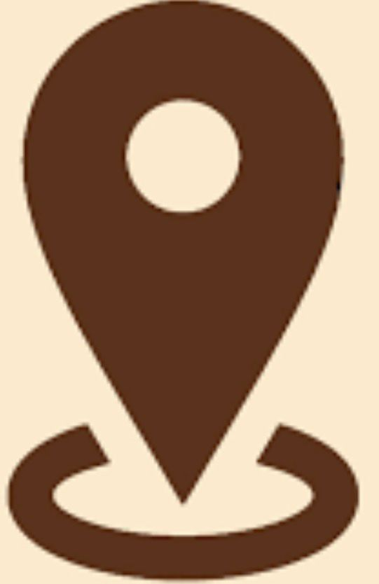
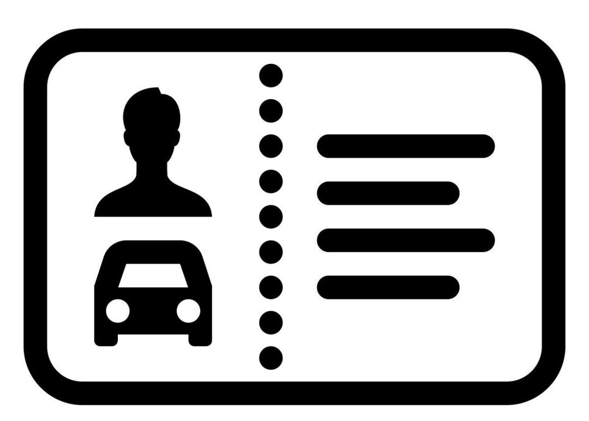

Coordonnée
| +221 78 577 31 15
| sykhadija38@gamil.com

| Keur Massar MTOA Unite 11
| Permis BCentre d'intérêt
- Lecture
- Internet
- Dessin
- Sport(fitness)
- Voyage
- Jeux Vidéo
Langues
Francais (Professionnels)
Anglais (Scolaire)
Wolof (Maternelle)
Divers
Concours: Sonatel Academic,Force N,
Sama dekkuway Challenge(PGISS),ESP,
Application TER(seter),24h SIG (Esri)
Qualités
- Très bon Développeur
- Créatif
- Rigoureux
- Serieux
EXPERIENCES PROFESSIONNELLES
Projet Academique- Développement d'application
2026
- Conception et développement d’une application simple dans le cadre de ma formation en génie logiciel
- Utilisation de langages comme HTML, CSS, Algorithme et Python
- Travail en équipe avec répartition des tâches
Projet en communication digitale
2025
- Création de contenus pour les réseaux sociaux
- Gestion d’une page ou simulation de stratégie digitale
- Analyse de l’engagement et des performances
Étude sociologique (projet académique)
2024
- Réalisation d’enquêtes et collecte de données
- Analyse des comportements sociaux
- Rédaction de rapports et présentation des résultats